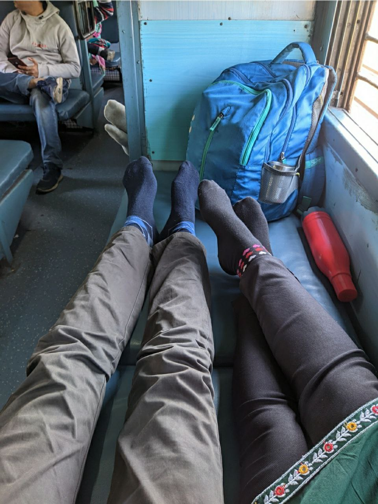

16 nov 2022
mujhe shraddha se mile hue 5 month ho chuke the, aur ab mai durg bhi a gya tha. Fir mujhe
shraddha batati hai ki vo shyd balco a sakti hai, lekin ye sun ke mujhe khushi nhi hui kyuki mai abhi kuch din
pehle hi ghar se wapas aya tha. Fir aise hi mere man me ek idea aya ki mai jabalpur ja sakta hu
aur shraddha ke sath wapas aa sakta hu. Vaise ye sochne me bhut acha lag rha tha lekin isme risk
bahut tha pehla to ye ki kahi ghar me pata na chal jaye, dusra ki kahi last moment me shraddha ko
koi chorne na aa jaye ya fir shraddha ka ana hi cancel na ho jaye
khair vaise dar to lag rha tha, jis din jana tha uske ek din pehle hi mummy samne se video call bhi ki thi
aur ye bhi puch rhi thi ki kaha hai apna background dikha...
aur to aur mere pass confirm ticket bhi nahi tha to ho sakta tha ki raat bhar jaag kr jana pade

khair mai train me chadha aur ek coach me jake baith gaya, BSP tak to train khali thi lekin BSP se bahut
sare log chadhe, jaha baitha tha usme bhi log aa gaye. Fir utne me pass ke hi seat me 4 log the aur unke
pass 6 ticket thi, unke family ke kuch log aa nhi paye the...
to fir unhone mujhe seat dedi(aisa laga jaise bhagwan ji madad kr rhe ho)
Khair fir mai soya, subah 4 baje se hi running status dekh rha tha dono trains ka, fir mujhe samajh aya ki jabalpur
pahuchne se pehle hi Narmada chut jayegi, to mai sehora road me utar gaya.
fir train ayi, mai pehle washroom gaya (dusre coach me) fir jab train chalne lagi tab shraddha k pass gaya
fir hum dono sath me baithe gane bhi sune, fir dusri jagah gaye jaha par seat thodi khali thi, fir shraddha
ko side se hug bhi kiya.... aur khana bhi khaya ek dusre ke hatho se....
fir koi to station aya usme utre thoda ghume fir wapas aye aur side wali seat par sath me baithe...
fir aise hi time nikla, 12:30 baje ke as pass pendra road me train ruki, shraddha ko washroom jana tha lekin
train me bahut ganda tha to vo station me hi ek bana tha usme gaye, itne me mai dekha ki signal yellow ho
gaya hai aur train chalne lagi! shraddha ka phone bhi mere pass tha... agar vo chut jati to kya karti
fir mai dono ka bag leke train se neeche utar gaya isse pehle train speed pakde. Fir shraddha bahar ati hai
aur thodi der baad bechari bahut dari hui hoti hai, chehre me dar nazar ata hai ki agar ghar me pata chal
gaya to kya hoga?
fir thodi der me dusri train ayi, humlog usme chadhe aur upar ki ek seat me baith gaye...
mai shraddha ki god me sir bhi rakha, ankh band karke leta tha, tunnel ayi...shraddha ne forehead pe kiss
kiya, first time........